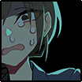

メインフェイズ サイクル2-2
行動：夜高ミツル
GM：フランさんの家なんですか？夜高ミツル：お邪魔しますか
乾咲フラン：家の周囲は除去した雪で山になってそう
糸賀大亮：フランさんの家の美使用人たちが働いている。
GM：先ほどと同じ客間に通されて、しかし空気はなお重苦しい。
GM：美メイドたちも、気安く近づいていい状況ではないのを理解しているようだ。
GM：温かい紅茶を差し出してそそくさと去っていく。
糸賀大亮：しかし、慣れたというか、……外よりはちょっと落ち着くようになったな。
糸賀大亮：ゆかりさんの様子を見ている。
忽亡ゆかり：「ん、おいしい」
忽亡ゆかり：いつもと変わらぬ笑みを浮かべたまま。しかし纏う雰囲気は氷のように冷たい。
夜高ミツル：「……」何から聞くべきか、なんと声をかけるべきか。ここまで考えていても一向にまとまらなかった。
糸賀大亮：いつもと変わらないから、いつ何をしてくるか分からない、という緊張がある。
糸賀大亮：「…………事実の」
糸賀大亮：「確認から、してもいいか。……できれば」
忽亡ゆかり：「何が聞きたい？」
糸賀大亮：「あんたの弟について」
忽亡ゆかり：「ああ」
糸賀大亮：「……」その先をさらに、詳細に、確認したいことを聞くのは、
糸賀大亮：さすがに躊躇われて、沈黙をとってしまう。
忽亡ゆかり：「何」
忽亡ゆかり：「弟のことが聞きたいんじゃなかったの？」
糸賀大亮：「……」ため息をつく。どっちが詰められてる側か分からない。
糸賀大亮：「…………死んでいたのか」
忽亡ゆかり：「まあねー」天井を見つめて、さらりと答える
糸賀大亮：もともとこの人は、俺から見てものすごくまともに見える人だった。
糸賀大亮：狩人ってのは、たいていどっかおかしくて……
糸賀大亮：フランなんかも、強いし頼もしいけど……美しいし……
糸賀大亮：「……生きてると、思い込んでた？」
糸賀大亮：真城だって、単独行動したがりなのは、半吸血鬼で自信があるというのもあるけど、そういうおかしさだと思ってた。
忽亡ゆかり：「……」
糸賀大亮：そういう中で、この忽亡ゆかりという狩人は。
糸賀大亮：ひどくまともに見えた。見えていた。
夜高ミツル：ミツルが入院していた時、お見舞いにきたゆかりが、いつも彼女の弟のことを話してくれたのを思い出す。
夜高ミツル：弟の話をする彼女は本当に楽しそうで、幸せに満ちた表情をしていて……。
乾咲フラン：時折見せたあの電話はどういうことだったのか。あれすらも幻だったなら、あまりにも……狂気が根付きすぎている。
忽亡ゆかり：返事はない。コーヒーを飲む。否定も、しない。
糸賀大亮：「…………俺たちは、あんたが言ったことを」
糸賀大亮：「全部聞いていた、あんたが……魔女と」
糸賀大亮：「ハイドレンジアと約束をしたのも」
糸賀大亮：名前を出すとき、ぎくりとする。
糸賀大亮：「……これから、どうするつもりだ」
忽亡ゆかり：「弟を生き返らせる」
糸賀大亮：「即答か……」
夜高ミツル：「……！」
乾咲フラン：「……魔女に頼るのかい。」
糸賀大亮：戻ってきて、そりゃ気が変わることはそうないだろうと思ったが。
忽亡ゆかり：「それ以外に方法が？」
糸賀大亮：「…………ないな」それはそうだ。肯定する。
糸賀大亮：死んだ人間は生き返らない。
糸賀大亮：死んだ人間を生き返せる。そういう存在がある。
糸賀大亮：どっちも、分かってる……
乾咲フラン：忽亡の気持ちはわかる、わかるが。
糸賀大亮：「…そのあとは」
忽亡ゆかり：「特には考えてないかな」
忽亡ゆかり：「弟を生き返らせる事以外の事、考えるヒマなんて無いし」
糸賀大亮：「…………」
乾咲フラン：「ずっと、弟のために狩人をやってきたんだものな……」
乾咲フラン：……これはもう、"その時"に実力行使ででも止めるしかない。静かにそう思った。
糸賀大亮：彼女の内心が、想像できない。想像しようとするが、うまくいかない。
忽亡ゆかり：「無意味だったけどね！」おかしそうに笑う。
夜高ミツル：「無意味なんかじゃ……俺は……忽亡さんに、何度も助けてもらいました」
夜高ミツル：「……さっきだって」
糸賀大亮：彼女は狩人として、ずっとやってきた。苛烈な矛先がこっちに向いたのは。
糸賀大亮：一度や二度じゃない。俺よりも覚悟が決まってる狩人だと。
糸賀大亮：……そう思っていた。
糸賀大亮：でもその覚悟が。
糸賀大亮：覚悟が立脚している土台が、もうとっくに存在しなかった時。
糸賀大亮：どうなるのかなんて、想像できない。
糸賀大亮：「…………もし、」
糸賀大亮：「俺たちが、それを止めるとしたら、あんたはどうする」
糸賀大亮：だから、話を聞くしかない。
忽亡ゆかり：「……」ミツルの言葉に、わずかに眉をしかめるも、すぐにまた表情は無へと戻り、まっすぐに大亮を見つめる。
忽亡ゆかり：「私を、止めるの？」
忽亡ゆかり：「自分は、願いを叶えたくせに？」
糸賀大亮：その通りだ。
乾咲フラン：「…………止めるよ。」
夜高ミツル：「……俺が、俺が止められなかったんです！ 連れて行かれた糸賀さんを、見つけられなかった……」
糸賀大亮：「……」
糸賀大亮：沈黙して、ゆかりをじっと見つめている。
忽亡ゆかり：「いやいや、みんなさ」
忽亡ゆかり：「なに、糸賀さんを庇うみたいな雰囲気出してるの？」
忽亡ゆかり：「みんなもじゃん。乾咲さんだって、夜高くんだって」
忽亡ゆかり：「止めたの、私でしょ？」
糸賀大亮：そういうことを言ってくるのは。
糸賀大亮：想像していたし、言われても仕方ないとも。
糸賀大亮：……思っている。
糸賀大亮：「そうだ」
糸賀大亮：「そうだな」
糸賀大亮：動揺もなく。
糸賀大亮：ゆかりを見つめている。その言葉の先を待っている。
乾咲フラン：「……だから今度は、私達が止めるよ。君が望んでいなくてもね。」
夜高ミツル：「…………そう、です」
忽亡ゆかり：「でも、かなたは生き返りたいって言ってる」
忽亡ゆかり：ね、と隣の虚空へ優しく微笑み。
糸賀大亮：……
夜高ミツル：息を呑む。
糸賀大亮：「死んでるよ」
忽亡ゆかり：「死んでるね」
糸賀大亮：言葉を吐く。「『死んだんだ』」
糸賀大亮：思い出している。
忽亡ゆかり：「でも、なかった事にできる」
忽亡ゆかり：「今度は空想じゃなくて、現実に」
糸賀大亮：「大事な身内だ」
糸賀大亮：「……あんたはそれを」
糸賀大亮：「まだ………」
糸賀大亮：「見なかったことにしているのか」
糸賀大亮：これを俺が言うのは。どんな厚顔だろう。でも。
GM：大亮さん……………
GM：大亮さんがんばってるよ……がんばってるよ……
糸賀大亮：ひい、ひい
GM：すっごいえらい
乾咲フラン：ゆかりさんのHPバーが見えねえ
夜高ミツル：強すぎる
忽亡ゆかり：がんばれ……がんばれ……！！！
糸賀大亮：「そうだ」
糸賀大亮：「あんたは、正論を言う人だったよ」
糸賀大亮：「あんたが言ったんだ」
忽亡ゆかり：「そうだねー……」
糸賀大亮：「見なかったことにして」
糸賀大亮：「見送ってやれないのは、あんまりだろう」
忽亡ゆかり：「会いたいって気持ちは、正論じゃ諦められない」
忽亡ゆかり：「糸賀さんなら、わかると思ってたけどな」
糸賀大亮：「そう思うか」
糸賀大亮：手応えが。蘇る。
糸賀大亮：「……耐えられると思っていたよ、俺は」
糸賀大亮：「自分の勝手で、三人を生き返らせて」
糸賀大亮：「気持ちのけじめとかって、三人とも殺したんだ」
忽亡ゆかり：「……」
糸賀大亮：「それでもう、これ以上のことはないって」
糸賀大亮：「これ以上、望みなんかしないって」
糸賀大亮：「そう信じてた」
糸賀大亮：三人を殺した手応え。覚えている。今でも鮮明に思い出せる。
糸賀大亮：それを頼りにして、狩人としてやっていこうと。
糸賀大亮：やっていけると思っていた。
忽亡ゆかり：「バカだよね。そのまま、みんな自分のものにしちゃえばよかったのに」
忽亡ゆかり：「なんでそんなもったいない事したの？」
糸賀大亮：だから……想像できないとか、分からないとか。
糸賀大亮：言っているけど、分かることはあって。
糸賀大亮：「俺は、狩人だよ」
糸賀大亮：「いや、違うな。狩人だからじゃなくて」
糸賀大亮：「もっと、ずっと、簡単なことなんだ」
糸賀大亮：「そんなことはしちゃいけないって、分かってるからだ」
忽亡ゆかり：「……」
糸賀大亮：「…………でも」
糸賀大亮：「ダメだった」
糸賀大亮：「殺した覚悟だとか」
糸賀大亮：「そんなものは、何にもならなくて」
糸賀大亮：「俺は結局、願ってしまった。抵抗、できなかった」
GM：背徳。
GM：願っては、ならないこと。
GM：狩人であれば「許されないこと」を、理解していないはずはなかった。
GM：許されない願いであると理解しているからこそ。
GM：その願いは、狩人の心を蝕むのだから。
忽亡ゆかり：「…………」
糸賀大亮：「だからあんたが……本当に、それを願っているのは」
糸賀大亮：「そのことは、分かる。望むことを、どうしたって」
糸賀大亮：「肯定しようとしてしまう。どこかで。ダメだって……分かってるのに」
糸賀大亮：ゆかりを見つめる。
糸賀大亮：「相談室でさ」
糸賀大亮：「あんたの悩みを聞いた時に」
糸賀大亮：「なんてことを相談するのかと思ったんだ」
糸賀大亮：「でも、あんた、万一にでも…………」
糸賀大亮：「傷つけたくないって」
忽亡ゆかり：「……言ったね」
糸賀大亮：「もしあんたが弟を生き返らせたとして」
糸賀大亮：「それが何より叶えたい、どうしようもない願いだったとして」
糸賀大亮：「全部自分に都合のいい弟になってもらって、傷つけないで生き返ってもらって」
糸賀大亮：「…………そうしたいのか、本当に」
忽亡ゆかり：「したいに、決まってる」
忽亡ゆかり：「弟に、会いたいんだ。たとえそれが悪い事でも……私が、会いたい」
夜高ミツル：「……それがもしかしたら、弟さんを傷つけることになっても、ですか？」
忽亡ゆかり：「…………それは、だって」目をそらす
忽亡ゆかり：「……傷つくとは、限らない、し……」
夜高ミツル：「万が一にでもって、そう言ってたじゃないですか……」
忽亡ゆかり：「死んだままに比べたら、マシだ……！」

GM：ゆかりにとっての幸福。
GM：幸福だから。
GM：幸福だからこそ、「叶えてはならない」願いを抱くことはやめられず。
GM：しかし幸福だからこそ、心に大切に抱いたかなたへの祈りを、
GM：――果たして誓いを裏切ることは、許されるのか？
GM：魔女に屈して願いを叶えた自分は、大切な弟の顔を見られるのか？
夜高ミツル：「……そうして結局一番傷つくのはきっと忽亡さんなんです。俺は、そうなってほしくない……」
忽亡ゆかり：「……うるさいな」苛立ちが顔に浮かぶ。
忽亡ゆかり：「姉を殺そうとした君が、何を説いてるんだ」
夜高ミツル：「……っ、」
忽亡ゆかり：「私は君が思うような立派な人じゃなかったんだよ」
忽亡ゆかり：「やめてくれない？そうやって理想を押し付けてくるの」
夜高ミツル：「……でも、助けてもらったのも、止めてもらったのも、本当のことです」
忽亡ゆかり：「っ」
夜高ミツル：「入院中も、何度もお見舞いに来てもらいました」
忽亡ゆかり：「だから何だよ」
忽亡ゆかり：少年を突き放すような言葉を言う。なのに、その少年が傷つく姿を見ると、胸に痛みが走る。
忽亡ゆかり：「……知らないよ、そんな事」
糸賀大亮：痛ましかった。明らかに、相手を傷つける言葉を選んでいて。
糸賀大亮：それが、ゆかり自身を傷つけているように見える。
乾咲フラン：（……忽亡クンは、きっと心のどこかでわかってはいるんだ。叶えるべきじゃないってことは……）
夜高ミツル：「…………だから、俺は、本当に、感謝してて……忽亡さんが、弟さんを大切に思ってるのも見てきたから…………」
夜高ミツル：「弟さんに対して、後ろ暗くなるようなことはしてほしくないです……」
忽亡ゆかり：「…………」睨む。
忽亡ゆかり：「……みんな、正しい事ばっかり言う」
忽亡ゆかり：「私は、弟を生き返らせたいって話をしてんだ！」
忽亡ゆかり：「噛み合うわけがないじゃないか！」
乾咲フラン：「……正しくあろうとしなければ、失ってきた人たちに申し訳が立たないからだ。」
忽亡ゆかり：「だからなんだ！狩人なんてクソくらえだ！あんなんが、正義の味方かよ！」
忽亡ゆかり：「別に狩りは好きにすればいいだろ、止めないよ！」
忽亡ゆかり：「それと、あの相談もだ。同伴が要るんでしょ？それぐらいは協力するさ。あれは紫陽花ちゃんの望みでもあるしね」
乾咲フラン：「正義の味方、ね……私はこれ以上、何かを失いたくないし、失わせるのも見たくないだけだ。」
乾咲フラン：「……人外に叶えられた願いは、儚いんだ。いつかきっと、ひどい形でまた失う。……それこそどんなに失いたくないと願っても。」
忽亡ゆかり：「全て失ったんだよ！」
忽亡ゆかり：「全部だ……もう失うものなんてないんだ……」
忽亡ゆかり：「……もう失わない……今度はちゃんと護る……」
忽亡ゆかり：その瞳が、迷いに揺らぐ。
忽亡ゆかり：本当にそうか？守れるのだろうか？そうして蘇ったのは、果たしてかなたなのか？
乾咲フラン：「キミだけを慕う、キミだけのために作られた、偽物の弟を護って、どこまで世界と戦えるんだ？」
乾咲フラン：「キミがボロボロになる事が、弟クンの願いだったのか？」
忽亡ゆかり：「……もうボロボロだよ。生きてたくないんだ」
忽亡ゆかり：「それで世界と戦えば、弟と一緒に死ねるかもしれない」
乾咲フラン：「キミが弟クンのために全てをなげうったのは……聞いた。でも弟クンは、きっと。キミを愛していたよ。キミに生きてほしいと……思っているはずだよ。」
乾咲フラン：「キミが死んだら、弟クンを覚えてる人間が居なくなってしまう。そんなの、悲しくないか？」
忽亡ゆかり：「……声がさ」
忽亡ゆかり：「可愛いんだ。それに、布団みたいな、いい匂いがする」
忽亡ゆかり：「身長はちょっと低くて、あんまり男らしくはないけど……」
忽亡ゆかり：「くりっとした目、柔らかい体、触るとちょっと困ったような顔をする」
忽亡ゆかり：「近くで見ると、鼻にはそばかすがあって、乾燥肌だから、たまに唇が乾いてて」
忽亡ゆかり：「リップを塗ると、恥ずかしそうに拒むんだ」
糸賀大亮：「……忽亡さん」
忽亡ゆかり：「……可愛いんだよ。いい子なんだ」
糸賀大亮：「忽亡さん」
忽亡ゆかり：「クラスでも愛されてた。みんなの前に立つような子じゃないけど、友達たちにからかわれたりして、でもいじめられてるみたいな感じじゃなくて、愛でられてるみたいな」
忽亡ゆかり：「みんなにも、紹介したかった」
糸賀大亮：「…………」
乾咲フラン：「……そうだね、きっと素晴らしい子なんだろう。」
忽亡ゆかり：「……諦めたくないよ」
糸賀大亮：もうどこにもいない。
忽亡ゆかり：「諦めたくないんだ」
乾咲フラン：「……」わかるよ、とは口に出さなかった。
忽亡ゆかり：「もう何年も会ってない。会ってたつもりだけど、本当は会ってなかった」
乾咲フラン：「向き合えなかったんだね。弟クンが、死んだ事に。」
夜高ミツル：彼女の弟への愛が、痛いほど伝わって。本当に止めなければいけないのか、気持ちが揺らぎそうになる。
糸賀大亮：魔女に願えば、取り戻せる。……諦められないのは、分かってる。でも。
糸賀大亮：「俺たちは、ハイドレンジアを止めるよ」
忽亡ゆかり：「…………」
糸賀大亮：「正しいことをしようってわけじゃない」
糸賀大亮：「あんたのためだとか、そういうことも、俺には言えない」
糸賀大亮：「……でも、そうしなきゃいけないから」
糸賀大亮：「そうしなきゃいけないと思って」
糸賀大亮：「止める」
糸賀大亮：「…………」
忽亡ゆかり：「……そう」
糸賀大亮：「あんたは、どうする」
忽亡ゆかり：「…………………………」
夜高ミツル：どちら側に立つのか。それは今朝、ゆかりが糸賀にかけた問いだ。
忽亡ゆかり：「……行こっか、そろそろ」
忽亡ゆかり：答えはない。諦めるとも言わず、しかし願いを叶えるとも言わず。顔を伏せ、その表情は見えない。
忽亡ゆかり：けれど、本当に願いを叶えるために全力を尽くすならば、ここで狩人たちを振り切るのが最適解のはずだ。
糸賀大亮：さっき聞いた時、何も考えていない、と彼女は言っていた。だから、
糸賀大亮：……これから。
忽亡ゆかり：目は虚ろで、声に力はなく、魔女狩りに積極的な様子はないが。
忽亡ゆかり：この後起こる出来事に、自身の運命を委ねたようだった。
夜高ミツル：冷静に考えて1シーンじゃどうしようもないよな 十数年の思い……
乾咲フラン：はい……
夜高ミツル：みなさん援護を……力を……
糸賀大亮：援護します
乾咲フラン：援護するとだけ宣言してお湯を混ぜてきます
忽亡ゆかり：援護します
夜高ミツル：護符＊4
GM：援護で+4、興奮剤で+2、行動力で+1
GM：合計で-2ですね。
夜高ミツル：2D6-2>=5 （判定：見る）
BloodMoon : (2D6-2>=5) → 6[1,5]-2 → 4 → 失敗
これ今気付いたけど+7と-6(個数)-6(所属外レアアイテム2個)で2D6-5>=5だな……
（PL有利のミスでよかったね）（激情で足りてるし）（にしてもどんな計算してたんだ？）
乾咲フラン：惜しい～
夜高ミツル：激情～
GM：OK
夜高ミツル：フランさんの家を激しく家探ししました
GM：激情的に家探しするミツルくん
GM：夜高ミツルは激情を使用！（激情：1->0）
GM：糸賀大亮のテンションが3増加！（テンション：11->14）
GM：忽亡ゆかりのテンションが3増加！（テンション：15->18）
GM：乾咲フランのテンションが3増加！（テンション：12->15）
乾咲フラン：ウオオー
GM：そんな感じでほどほどにアイテムも調達して。
GM：見つかったところで。
GM：シャンデリアの電気が、ふっと消えます。
GM：同時に暖房も止まりますね。電気機器全般がふっつりと。
GM：……停電ですね。室内が薄闇に沈む。
GM：狩人たちは朝から活動してきたが、既に時刻は17時を回っている。
GM：７月であればまだまだ太陽が高く明るいはずだが、そこにも魔女の影響が及んでいるのか。
GM：外を見れば、電灯の光も消えている。
GM：フランの家に限らない。広い範囲を巻き込んだ大規模停電だと理解できるでしょう。
GM：……被害は今も拡大している。雪が降り止む気配もない。
GM：急がなければならない。
乾咲フラン：「……インフラに影響が出始めたか。」
糸賀大亮：「…………行こう」
GM：アイテムの分配はどうされますか？
GM：護符は一人一つとして、銘剣と聖水は？
夜高ミツル：銘剣をミツル 護符を各人に 金剛杵は……フランさんの家のだからお願いするか
GM：あれ、金剛杵だっけ
糸賀大亮：聖水だったはず
夜高ミツル：あ、違う 聖水
GM：OK
夜高ミツル：ぼろぼろ……
GM：おつかれ……
糸賀大亮：仕方がない……
乾咲フラン：心で負けるな……！大丈夫だ……！！
GM：ではそういう形で、そのまま公園ですね。
行動：忽亡ゆかり
皆川彩花：彩花は雪を見ている。皆川彩花：顔色は悪くないが、その表情は優れない。
糸賀大亮：まあ、そうだな……
糸賀大亮：説明しないまま移動しちゃったからな。
皆川彩花：戻ってきた狩人たちを認めても、今までのように顔を綻ばせることもなく。
皆川彩花：気遣わしげにゆかりに視線を向ける。

皆川彩花：隔てられていることを流石に理解するのか、声をかけることはできない。
皆川彩花：それでも目を逸らすことはなかった。
忽亡ゆかり：視線が合って、すぐに避ける。
糸賀大亮：「……とりあえずは、大丈夫だ」
皆川彩花：「……だいじょうぶ……」
糸賀大亮：と、小声で彩花に言うけど、まあ……心配なのはどうしようもないな。
皆川彩花：納得した声ではない。ただの復唱だ。
糸賀大亮：「話をして……少し、落ち着いてくれた」
皆川彩花：「……ん」
皆川彩花：かすかに頷く。
糸賀大亮：「…………」夜高を見た。
夜高ミツル：深呼吸してから、彩花の元へ。相談所の椅子に腰掛ける。
皆川彩花：そこでやっと、ゆかりから視線を外す。
皆川彩花：ミツルを見る。
夜高ミツル：「……暗くなってきた所、ごめん。話しても……いいかな」
皆川彩花：「は、はい」こくりと今度は明確に頷いて。
皆川彩花：「よろしく……お願いします。ええと……」
夜高ミツル：「夜高ミツル。えーと……真城のクラスメイト」
皆川彩花：「夜高ミツルさん」
夜高ミツル：「……です。よろしくおねがいします」
皆川彩花：「……さっくんの？」
夜高ミツル：「ん」
夜高ミツル：「そう。1年の時からクラスが一緒で」
皆川彩花：「さっくんの……」じっとミツルを見ています。
皆川彩花：「そう、なんですか」
夜高ミツル：「？？？」見つめられて、ちょっとたじろぐ。
皆川彩花：流石に口が重くなっている。ゆかりのあの姿を見てしまったからか、話題が理由かは、判別がつかない。
夜高ミツル：「えーっと……それで、話なんだけど、多分、あんまり聞いてて楽しい話じゃなくて……」
夜高ミツル：もごもご
夜高ミツル：「なんか、返しに困ったりしたら、聞き流してくれていいから……」
皆川彩花：「……はい」
皆川彩花：「はい」
皆川彩花：繰り返し頷くとともに、少し背筋を伸ばした。
皆川彩花：相談所なのだから、ということを思い出した様子。
皆川彩花：「大丈夫、です。あの、……どうぞ」
夜高ミツル：フランみたいに話がうまければ……と思うが、思ってもうまくなるわけはないので。
夜高ミツル：「……えーっと、俺一人暮らしなんだ。今。その……家族が、いなくて」
皆川彩花：「家族が……」
皆川彩花：どういうことだろう、と瞳が戸惑う。
夜高ミツル：「5年前に……死んでて。その、ひどい、事故みたいな」 流石に殺されただのとはちょっと言いづらく
皆川彩花：目を見開く。
夜高ミツル：「……父親と、母親と、2つ年上の姉」
皆川彩花：「…………」
夜高ミツル：困るよな……だよな……ごめん……
皆川彩花：何も言えないまま、ミツルの言葉を聞いている。
乾咲フラン：出だしがもうどうしようもなくヘヴィー
皆川彩花：ドヘヴィー
皆川彩花：むしろ最後で良かったな……
糸賀大亮：最後にド重いのがきた
皆川彩花：「そ、れは」
皆川彩花：「…………」
皆川彩花：なにか、言葉を探そうとしている気配だけはあるが。
夜高ミツル：「……いや、本当にこんな話して申し訳ないんだけど……人に相談するようなことがこれくらいしか思いつかなくて……」
皆川彩花：「い、え、あの」
皆川彩花：「そ……相談所、ですから！」
皆川彩花：「だから、その、それで」
皆川彩花：「それで、相談したいことが、あるん……ですよね？」
夜高ミツル：いや、相談するようなことでもないのだが
皆川彩花：相談所だからな……
夜高ミツル：「……俺、友だちがいるんだ。まあ、結構仲良くて、何回か家にも遊びに来てたようなやつがいて」
夜高ミツル：言いづらい すごく言いづらい この先の話は
皆川彩花：「さっくん？」
夜高ミツル：「……違う」嘘だが。肯定するわけにはいかない
皆川彩花：「……違うんだ」
皆川彩花：ぼそっと。
夜高ミツル：「別の。別の友達」
皆川彩花：「はい」頷いた。
夜高ミツル：「……そいつが」
夜高ミツル：「家族の……事故の。原因だったんだって。いうのを、最近知って……」
皆川彩花：「事故の、原因……」
夜高ミツル：口が
夜高ミツル：重くなる。
皆川彩花：考え込んでいるが、彩花の方から重ねて問うことはない。続きを待っている。
夜高ミツル：後ろの仲間たちにはお茶会の時に話してることではあるけど、こんなことを何も知らない彼女に話すのは、すごく気が引ける。
夜高ミツル：「……それでさ、そいつが。友達でいられないって言ったんだ。加害者と被害者だから、みたいなさ……」
皆川彩花：「…………」
夜高ミツル：「別にそいつが、そうしてやろうと思ってなったわけじゃないのに……」
皆川彩花：「ミツルさんは」
夜高ミツル：「……ん？」
皆川彩花：「その友達は、絶対に何にも悪くないって、思っていますか？」
夜高ミツル：「…………分からない」少し悩んだ末の、率直な心境
夜高ミツル：「そいつは、自分が悪いんだって言うんだけど」
皆川彩花：「……はい」
夜高ミツル：「俺は話しで聞いただけだから。分かんなくて」
皆川彩花：「…………」
夜高ミツル：「本当にそいつが悪いのか、自分で責任を背負い込もうとしてるのか」
皆川彩花：「じゃあ」
皆川彩花：「本当にその友達が悪かったら、どうしますか？」
夜高ミツル：「…………」
皆川彩花：「もう、友達でいられない？」
夜高ミツル：「……いや」
夜高ミツル：「多分、最初からそのことを知ってたら嫌いになれたかもしれないけど」
夜高ミツル：「俺はあいつのこと、変なやつだし、口が悪かったりとか、すぐ小馬鹿にしてきたりとか……」
皆川彩花：彩花の視線は、痛いほどにまっすぐだ。
夜高ミツル：なんかムカつくとこばっかり思い出してきたな……
夜高ミツル：「それ以上に、いいヤツだったり、俺を助けてくれたり、そういう所を知ってるから」
夜高ミツル：「……今更嫌いになれないんだよな」
皆川彩花：「…………」
皆川彩花：「嫌いになれない、っていうのと」
皆川彩花：「友達でい続けられるっていうのは、同じ、なんですか……？」
夜高ミツル：「難しいこと言うなぁ……」
皆川彩花：「……ごめんなさい」
皆川彩花：「でも、だって」
皆川彩花：「友達っていられないって、その友達が言ってるんですよね」
皆川彩花：「ミツルさんは……そうは、思ってない、ふうじゃないですか」
夜高ミツル：「……うん」
皆川彩花：「そうして引き留めてるのに」
皆川彩花：「ミツルさんの方からだめになってしまうかもしれないなら」
皆川彩花：「……それは、すっごく、ひどいです……」
夜高ミツル：「……そうだな。俺もそう思う」
皆川彩花：小さく頷いた。
夜高ミツル：「だから、俺はそいつと友達でいたいんだ」
皆川彩花：「……絶対に？」
夜高ミツル：絶対という重い言葉。少し、思案して……でも、やっぱり。
夜高ミツル：「……ああ。そいつは自分から離れようとして、俺が引き留めた。だから、うん。絶対……だな」
皆川彩花：「…………」
皆川彩花：「……絶対、ですよ」
夜高ミツル：その気持ちは確かなんだけど。でも。違う気持ちもあった。
夜高ミツル：「……ん、」重々しく頷いて
皆川彩花：頷き返す。
皆川彩花：「なら、そのことを伝えるしかない、んだと思います」
皆川彩花：「それでその人が、友達でい続けることを選べるかどうかは、その人次第だと思いますけど……」
夜高ミツル：「一回話はしたから、それで納得してくれてると思いたいけど……」改めてこの話するの恥ずかしいよ
皆川彩花：「分からないですよ」
夜高ミツル：「まあ、ここまでは言ってないけど……」
皆川彩花：「だって、自分が悪いのに、付き合わせ続けるのって」
皆川彩花：「……つらい、ですもん」
皆川彩花：身に覚えがあるように、語る。
夜高ミツル：俺をボコボコにしてめちゃくちゃ楽しそうにしてた顔を思い出している。
皆川彩花：「どんなに大丈夫だって、気にしなくていいって言ってたって、それがいつまで続くか」
皆川彩花：「嫌になられちゃわないか。飽きてしまわないか。心変わりをしないか」
皆川彩花：「……されたって、自分が悪いんだから、仕方ない、って……」
皆川彩花：「分かって、しまうから」
夜高ミツル：「……前と変わらないように見えてたけど」
夜高ミツル：「でも、わかった。話してみるよ」
皆川彩花：「……はい」頷いた。
皆川彩花：それで終わりだろうか、と首を傾げる。
夜高ミツル：恋愛相談みたいになってきてない！？
皆川彩花：恋愛相談なの？
忽亡ゆかり：やはり恋愛相談だったか
乾咲フラン：恋愛炎上戦線かな？
糸賀大亮：恋愛相談かあ～
皆川彩花：NTR炎上戦線って感じよな
乾咲フラン：ひどすぎる 人間関係が燃え落ちる
糸賀大亮：燃え上がるから
糸賀大亮：NTRは背徳だから
夜高ミツル：話を続ける
皆川彩花：こくこく頷いている。
夜高ミツル：「でも……今日、夢を見て」
夜高ミツル：「姉の夢」
皆川彩花：「お姉さんの……」
夜高ミツル：魔女に見せられた幻覚
夜高ミツル：「……なんで」
夜高ミツル：「…………そいつと、一緒にいるんだ、って」

夜高ミツル：ぎええ
夜高めぐる：それがミツルの頭から離れない。
夜高ミツル：「……誰のせいでこうなったんだって」
皆川彩花：「…………」
夜高ミツル：……本当に、初対面の女の子に話すような内容じゃない。
皆川彩花：「……そう、思ってしまっているところが、あるから？」
夜高ミツル：「…………」
夜高ミツル：「そう、なんだと、思う」
皆川彩花：「…………」眉を寄せる。
夜高ミツル：「本当に気にしてないなら、あんな夢を見るはずない」
夜高ミツル：魔女は、望みを叶える。
夜高ミツル：心に潜んでいないものを見せはしない。
夜高めぐる：めぐるにはグズだバカだどんくさいと罵倒されてばかりだったし、
夜高めぐる：お世辞にも仲のいい姉弟とは言えなかったと思っているが、
夜高めぐる：それでも、憎かったわけではない。
夜高めぐる：めぐるは姉として、ミツルの面倒もよく見てくれた。
夜高めぐる：『あんたさー、もっとうまくやりなさいよ』
夜高めぐる：ミツルがまだ小学生だった頃。
夜高めぐる：出たばかりのゲームに夢中になって、家の手伝いも宿題すらすっぽかしてしまって、
夜高めぐる：親に怒られて、3DSを取り上げられてしまったことがあった。
夜高めぐる：それをこっそりと取り返して、親を説得してくれた時、
夜高めぐる：『とにかく信頼よ、信頼。見た目だけでもいい感じに繕っとけばね～』
夜高めぐる：『ちょっとの無茶くらい聞いてくれるし、やらかしてもそこまで怒られないんだから』
夜高めぐる：『要領よくね！ ま、ミツには難しいだろうけど』
夜高めぐる：なんて、ミツルのことをバカにしながらも。
夜高めぐる：なんだかんだとミツルのフォローに回ってくれることもあっためぐるのことを、覚えている。
夜高めぐる：……もちろん、勝手に漫画を持ち出されたり、おやつを食べられたりとか、
夜高めぐる：そういう暴君振る舞いの思い出のほうが、よっぽど多いのだが。
乾咲フラン：ヒーン
糸賀大亮：かわいいねえ
糸賀大亮：可愛い姉だなあ
忽亡ゆかり：姉～～～～～～～～～～～～～～～～～～
糸賀大亮：在りし日の可愛い姉
皆川彩花：もう死んだ姉
糸賀大亮：もういない姉
夜高ミツル：めぐるは確かに、大切な姉だった。けして失われていい存在ではなかった。
皆川彩花：「……思ってしまうことを、完全にやめるっていうのは」
皆川彩花：「多分、無理だとは、思うんです」
夜高ミツル：「そう、なのかな」
皆川彩花：「なるべく考えないようにするとか他のことを考えるようにする、みたいなことはできても」
皆川彩花：「絶対に思わないようにする、なんてのは……」
皆川彩花：「忘れてしまう、しか、ないじゃないですか」
夜高ミツル：「…………」
皆川彩花：「でも、そんなことはできっこないから……」
夜高ミツル：あの時、姉を斬ってしまっていたら。そうなっていたのだろうか。
皆川彩花：「……そう思ってしまっているところのある、自分のこと」
皆川彩花：「それを、なんていうか……誤魔化さないで、いるのが、きっと」
皆川彩花：「大切……なの、かもしれない、って」
皆川彩花：「私は、そう思います」
夜高ミツル：「ごまかさない、か……」
夜高ミツル：「そうだな……」
夜高ミツル：「……俺」
皆川彩花：「……はい」
夜高ミツル：「そいつの話を聞くずっと前から、家族のこと、あんまり思い出さないようにしてたんだ」
皆川彩花：「…………」
夜高ミツル：「思い出したく、なくて……」
夜高ミツル：「……」
皆川彩花：「……それは、今も、ですか？」
夜高ミツル：「今は……」否定しかけて、でも、ごまかさないのが大事だと言われたから
夜高ミツル：他の仲間たちの告白を聞いた上で、自分だけ取り繕ってもいられない
夜高ミツル：「……前よりはマシだけど、多分、今も」
皆川彩花：「……そう、ですか」
皆川彩花：「……これからも、そうしていくんですか……？」
夜高ミツル：「……家族が死んで、」
夜高ミツル：「俺一人生き残って……」
夜高ミツル：「……」それは、本当に誰にも話したことない。知られたくなかったこと。
夜高ミツル：「俺は……」
皆川彩花：「…………」
夜高ミツル：「……俺は、生きてて、良かったって……」とぎれとぎれの声。掌に汗がにじむ。
夜高ミツル：「一瞬だけど
夜高ミツル：「そう、思ったんだ……」
皆川彩花：「……そ、れは」
皆川彩花：「……それは、だって」
皆川彩花：「誰だって、…………」
夜高ミツル：「家族が、死んでるのに」
夜高ミツル：「そんなことを考える自分が嫌だった」
皆川彩花：小さく、頷く。
皆川彩花：「……そ、うですね」
夜高ミツル：「……だから、思い出さないようにしてた」
皆川彩花：「でも、…………」
皆川彩花：「こうして、口に出せたじゃないですか」
皆川彩花：「それは、……それなら、きっと、……」
皆川彩花：「…………」
皆川彩花：「きっと……」
夜高ミツル：「……人に話したの、はじめて」
皆川彩花：「！」
皆川彩花：目を瞠る。
夜高ミツル：うつむく。最悪だ……
皆川彩花：「…………」
夜高ミツル：何を言ってるんだ本当に……
皆川彩花：「……その」
皆川彩花：「……え、っと」
皆川彩花：「…………」
皆川彩花：「話してくれて、ありがとう、ございます」
夜高ミツル：顔を上げる
皆川彩花：「だって、そんな理由なくて」
皆川彩花：「私、ミツルさんとは……初めてで」
夜高ミツル：「……そうだよなぁ」
皆川彩花：「こんな相談所だって、ミツルさんは、真面目にしてくれる理由もなくて」
皆川彩花：「なのに、……なのに、だから」
夜高ミツル：「誰かに、話したかったのかもな……」
皆川彩花：「誰かに……」
夜高ミツル：「……ごめんな、こんな話して」
皆川彩花：「いいえ」
皆川彩花：明確に首を振った。
皆川彩花：「ミツルさんは、えらいです」
皆川彩花：「自分の嫌なところ、ちゃんと話せて」
夜高ミツル：「……そうしないと、多分まためぐる……姉に怒られるんだ」
皆川彩花：「ふふ」
夜高ミツル：姉の名前を口に出す調子は、少しだけ軽くなっていた
皆川彩花：笑う。「強いお姉さんだったんですね」
GM：……判定かな！？
夜高ミツル：ゆかりさん！
夜高ミツル：お願いします！
GM：ゆかりさん ゆかりさんなのだよ 手番が逆転している
忽亡ゆかり：いくぞ
忽亡ゆかり：興奮剤使います
GM：人脈への狩猟ね どうぞ
忽亡ゆかり：2D6+3>=6 （判定：捕らえる）
BloodMoon : (2D6+3>=6) → 9[3,6]+3 → 12 → 成功
忽亡ゆかり：余裕
夜高ミツル：高い
糸賀大亮：いぇーい
乾咲フラン：意欲がある～
夜高ミツル：レスバで負けなかった強者の余裕が
GM：支配力：皆川彩花 １→０
GM：支配力：皆川彩花が破壊されました。
GM：ハイドレンジアへ1個の部位ダメージ！（部位ダメージ：0->1）
糸賀大亮：わー
夜高ミツル：「そうなんだよ、もう俺のものは姉のものみたいなやつで……」
皆川彩花：「ふふふふ」
夜高ミツル：「……こういう風にあいつの話しするのも、なんか久しぶりだ」
夜高ミツル：「……ありがと、話聞いてくれて」
皆川彩花：「はい」
皆川彩花：「こちらこそ、ありがとうございました」
皆川彩花：ぺこりと頭を下げて、
皆川彩花：彩花は花形のハンマーを取る。
皆川彩花：最後のくるみの実を、ぱきゃり。
皆川彩花：それから隣のなんか……手を突っ込むところのある……そんな感じの箱を手に取りまして、
皆川彩花：「こちらから一つどうぞ！」
皆川彩花：ミツルへと差し出した。
乾咲フラン：ワクワクボックス
夜高ミツル：「お、おう……？」
夜高ミツル：促されるまま箱に手をつっこむ。
夜高ミツル：何が出るかな～
GM：何にします？
夜高ミツル：興奮剤でよいか～？
GM：興奮剤？
夜高ミツル：そうしましょう
GM：はーい。
GM：では箱の中から興奮剤が出てきます。
忽亡ゆかり：絵面
GM：なんかシュバって注射できるタイプの。
糸賀大亮：マジでか
GM：誰が持つ？
糸賀大亮：ミツルくんかな～
糸賀大亮：焼肉のこともあるし……
夜高ミツル：興奮剤いただきます！！！
皆川彩花：「良いものでしたか？」
皆川彩花：にこにこ問うてくる。
夜高ミツル：「……ん。そうだな」
皆川彩花：「よかった！」
夜高ミツル：「あると結構助かる感じのやつ。ありがたくいただきます」
皆川彩花：嬉しそうに頷いて、箱をテーブルへと戻した。
行動：ハイドレンジア 2nd
皆川彩花：直後、皆川彩花：彩花の身体を、紫陽花の花が包み込んだ。
皆川彩花：今まで狩人たちが閉じ込められてきた花の陣と同じもの。
皆川彩花：彩花本人は何も気付いていない。ベンチに座ったまま、にこにこ笑っている。
糸賀大亮：「！」
ハイドレンジア：「……お待たせしました、ゆかりさん」
ハイドレンジア：そうして狩人たちの背後に、ふわりとハイドレンジアが降り立った。
ハイドレンジア：ポニーテールが翻る。桃色の紫陽花が舞う。
ハイドレンジア：「さあ」
忽亡ゆかり：「……うん」
ハイドレンジア：「今度こそ、ちゃんと私に願って？」
ハイドレンジア：彩花を花の陣に閉じ込めたハイドレンジアが、公園に舞い降りて笑う。
ハイドレンジア：その視線はゆかりに向けられ、その言葉はゆかりに放たれ、
ハイドレンジア：ゆかりの答えを、待っている。
忽亡ゆかり：「ああ。もう答えは決まってる」
ハイドレンジア：ハイドレンジアが笑みを深めて、ゆかりを見る。
ハイドレンジア：忽亡ゆかりの幸福『背徳：忽亡かなた』を破壊します。
糸賀大亮：妨害します。
ハイドレンジア：OK
ハイドレンジア：まず判定してしまおうか、もはや。
ハイドレンジア：AST
BloodMoon : ランダム全特技表(3,9) → 胴部9：かわす
糸賀大亮：興奮剤を使用
ハイドレンジア：これで+5ですね。
糸賀大亮：ダイス目3以上か。振ります。
ハイドレンジア：どうぞ。
糸賀大亮：2D6+5>=8 （判定：刺す）
BloodMoon : (2D6+5>=8) → 8[3,5]+5 → 13 → 成功
『兄想いの』野嶋優香：振り直しを。
糸賀大亮：おうよ。
糸賀大亮：2D6+5>=8 （判定：刺す）
BloodMoon : (2D6+5>=8) → 6[1,5]+5 → 11 → 成功
ハイドレンジア：では止めてください。
ハイドレンジア：これからが本番ですよ。
乾咲フラン：ほんとだよ
夜高ミツル：手が震えてる
乾咲フラン：追加行動と同じぐらい恐ろしいよ
ハイドレンジア：夜高ミツルのテンションが3増加！（テンション：10->13）
忽亡ゆかり：「どうか……」
ハイドレンジア：「うん」
糸賀大亮：二人のあいだに割り込む。
糸賀大亮：「忽亡さん」
糸賀大亮：「あんたは約束したかもしれない」
糸賀大亮：ぼそぼそと言う。
ハイドレンジア：「…………」
忽亡ゆかり：「……あ？」
糸賀大亮：「どうしても、生き返らせたい」
糸賀大亮：「心は、止められない」
糸賀大亮：「……そうだな。俺はそう思うよ」
糸賀大亮：「でも、」
糸賀大亮：ハイドレンジアに向き直る。
ハイドレンジア：大亮と目が合って、笑い返す。
糸賀大亮：「……止めるよ。俺は」
ハイドレンジア：「どうして？」
糸賀大亮：「恥を知らないからかもな」杭を構える。
忽亡ゆかり：「…………」
ハイドレンジア：ハイドレンジアはふわふわと髪を靡かせながら大亮を見ている。
ハイドレンジア：そして、
ハイドレンジア：銃声。
『兄想いの』野嶋優香：大亮の右脚を、銃弾が掠めた。
『兄想いの』野嶋優香：「ゆかりさん！」
糸賀大亮：「……」
忽亡ゆかり：「優香ちゃん……」
『兄想いの』野嶋優香：死角から、拳銃を構えた優香が現れる。
『兄想いの』野嶋優香：「っ、気にしなくていいんです！ そんな――ハンターだ、なんて！」
糸賀大亮：息をつく。
『兄想いの』野嶋優香：「あなたは、あなたの願うことを、願ってください！」
『傷心少女』戸松絵理子：「……そうだよ！ いいじゃん、何が悪いの！？」
『傷心少女』戸松絵理子：「私だって願うもん！ 魔女に！」
『傷心少女』戸松絵理子：「彼の心を取り戻してほしいって！」
『傷心少女』戸松絵理子：「ハンターとか、そんなのは、よく分かんないけど……」
『傷心少女』戸松絵理子：「誰が、なんで、隣からそれを邪魔できるの！？」
忽亡ゆかり：「…………」
忽亡ゆかり：「糸賀さん」
忽亡ゆかり：「あなた、いい人だよね」
糸賀大亮：「いいや」
糸賀大亮：「……見たいものだけを見て」
糸賀大亮：「欲しがるだけ欲しがって」
糸賀大亮：「それが本当の救いじゃないなんて」
糸賀大亮：「俺には言えない」
糸賀大亮：「……どうして邪魔するんだって」
糸賀大亮：「言われても仕方がないよ」
糸賀大亮：「……だが、あんたが彼女たちの言葉を聞くべきだとは、思わないな」
糸賀大亮：二人。フォロワーたちの方を見る。
『兄想いの』野嶋優香：二人の女はきっとハンターたちを睨んでいる。
忽亡ゆかり：「……そうかもね」ナイフを仕舞う。
糸賀大亮：杭を持ったまま。ハイドレンジアの方へと向かっていく。
ハイドレンジア：「…………」
ハイドレンジア：その背中越しの、ゆかりを見ている。
糸賀大亮：息を吐く。知った顔だ。よく知っている顔だ。
糸賀大亮：「ハイドレンジア」
ハイドレンジア：「……なあに？」
ハイドレンジア：視線はゆかりに向いたまま。
糸賀大亮：「俺は、お前を止めるよ」
ハイドレンジア：「…………」
ハイドレンジア：「ゆかりさん」
ハイドレンジア：「あなたは、それでいいの？」
忽亡ゆかり：「……」
ハイドレンジア：「本当に？」
ハイドレンジア：「この人は、この人の願いを叶えたのに」
ハイドレンジア：「あなたは……」
忽亡ゆかり：「糸賀さんには、助けられてきた」
忽亡ゆかり：「自分の事は棚上げして、吐く正論にもさ」
忽亡ゆかり：「意義はあって、それに助けられる人もいる」
糸賀大亮：「……」
ハイドレンジア：「…………」
忽亡ゆかり：「私はそう思うよ」
忽亡ゆかり：目の前、向けられた視線に向き直る。
ハイドレンジア：「嘘」
ハイドレンジア：「嘘に決まってる」
忽亡ゆかり：「そう、嘘だ」
ハイドレンジア：「あんなに願っていたじゃない」
忽亡ゆかり：「もっと単純な話なんだ」
ハイドレンジア：「あんなに、泣き叫んで」
ハイドレンジア：「――――」
忽亡ゆかり：手で制する。
忽亡ゆかり：「大丈夫」
忽亡ゆかり：「糸賀さん」
忽亡ゆかり：「もっとさ、単純な話なんだよ」
糸賀大亮：「…………」
忽亡ゆかり：「それでも、諦められない願いもある」
忽亡ゆかり：「自分じゃさ、止められないんだ」
糸賀大亮：振り返る。ゆかりの目を見る。
ハイドレンジア：「……それを！」
ハイドレンジア：「それを、叶えてあげるって、言ってるの！！」
ハイドレンジア：「かなたくんを愛してるんじゃないの！？」
ハイドレンジア：「かなたくんの、全てが欲しいんじゃないの！？」
ハイドレンジア：「死んだままでいいの！？」
ハイドレンジア：「あんな風に無残に殺されたままでいいの！？」
ハイドレンジア：「いいわけないじゃない！」
ハイドレンジア：「――かなたくんを、愛しているのなら！！！」
夜高ミツル：「忽亡さん！」魔女の言葉など聞くなとばかりに叫ぶ。
忽亡ゆかり：「よくないさ！」
ハイドレンジア：「じゃあ！」
忽亡ゆかり：「みんな、分かってるんだろ！」
乾咲フラン：「！」
忽亡ゆかり：「私は願う！」
忽亡ゆかり：「だから……」
糸賀大亮：「ああ」
忽亡ゆかり：「力づくでも、なんでも……間違ってるなら、止めてみせろよ！」
ハイドレンジア：ハイドレンジアは、ゆかりに手を伸ばす。
糸賀大亮：ハイドレンジアに向かって駆け出す。
乾咲フラン：ゆかりに向かって駆け出す！
乾咲フラン：一度組み付けば……止められる！
忽亡ゆかり：「弟と……別れたくない」ハイドレンジアの手を取ろうと、自分も手を伸ばす。
糸賀大亮：躊躇わない。杭を
糸賀大亮：突き立てる。ゆかりの方はフランに任せて、振り返らない。
夜高ミツル：二人の間に割って入るように
ハイドレンジア：ゆかりの手を掴もうとする、その掌が、
ハイドレンジア：大亮の杭に貫かれて、止まる。
ハイドレンジア：「…………っ！！」
糸賀大亮：「させない」
糸賀大亮：「やらせないんだ」
ハイドレンジア：桃色の花弁が舞う。
糸賀大亮：「……そう決めたんだよ」
忽亡ゆかり：「……っ」
乾咲フラン：願いのために伸びた腕から、絡みつくようにゆかりの体にしがみつき——関節を極める。
忽亡ゆかり：「ぐっ……」
ハイドレンジア：願いを叶える桃色の花が、降雪に逆らうように浮き上がる。
ハイドレンジア：「――どうして」
ハイドレンジア：「どうして、そんなことができるの」
夜高ミツル：「諦めろ、なんて言えない。納得できなくても、恨まれたっていい……」
夜高ミツル：声が震える。『間違えるな』以前彼女に言われたことを思い出す。
乾咲フラン：「それでも、私達は……」
夜高ミツル：俺は間違えていないだろうか？ 本当に彼女の邪魔をしてしまっていいのか？
夜高ミツル：それでも、いつも正しくあった彼女に助けられた。憧れた。
夜高ミツル：だから、彼女を──止める。
糸賀大亮：痛みにゆがむハイドレンジアの目を。
糸賀大亮：見つめ返す。
糸賀大亮：「しちゃいけないんだよ。ハイドレンジア」
ハイドレンジア：悲しみと苦痛に表情を歪ませながら、ハイドレンジアはゆかりを見て、
ハイドレンジア：大亮の言葉を聞いている。
忽亡ゆかり：「いやだっ……！」手を伸ばす。もはや届かないと分かっていても、最後にあがくように。
乾咲フラン：「ダメだ。」強く戒めながら。引き離すとまでは行かずとも……食い止めることはできる。
糸賀大亮：言葉はきっと。
糸賀大亮：魔女になった彼女には、もはや届かなくて。
ハイドレンジア：ハイドレンジアの身体が花となり、端からほどけていく。
糸賀大亮：弟を喪ったゆかりにも、空々しい響きでもって伝わるかもしれない。
ハイドレンジア：爪先が。ゆかりに伸ばした指が、手が、桃色の紫陽花となって。
糸賀大亮：でもそれが、俺が本当に思っていることで、それをいうしかない。
ハイドレンジア：「――ひどいよ」
糸賀大亮：「そうだな」
ハイドレンジア：「どうして、ゆかりさんだけ邪魔されなきゃならないの？」
ハイドレンジア：「あなたは願いを叶えたのに」
ハイドレンジア：「あなただけじゃない」
ハイドレンジア：「――私は、あいつの願いだって、もう叶えてやった！！」
乾咲フラン：「！？」
糸賀大亮：「……！」
ハイドレンジア：「あいつはもう戦えない――戦わないよ」
ハイドレンジア：「願いを叶えてしまったんだから、その必要がないんだもの！」
ハイドレンジア：「あなたたちはただ一人だけ」
ハイドレンジア：「ゆかりさんの願いだけ、挫いただけ！」
ハイドレンジア：「その残酷さを、思い知りなさい！」
ハイドレンジア：ハイドレンジアはそう叫ぶと、
ハイドレンジア：全身を花と化して、その姿を掻き消した。
ハイドレンジア：はらはらと、桃色の花が落ちる。
ハイドレンジア：雪の上を彩っていく。
夜高ミツル：「あいつ、って……」
糸賀大亮：「…………」
GM：それと同時に、
皆川彩花：彩花を取り巻いていた花の陣も、消え失せた。
忽亡ゆかり：自らの腕を軋ませながらも逃れようともがく体は、魔女が消えたのを見て、やがて脱力していった。
皆川彩花：「…………」
忽亡ゆかり：「…………」
皆川彩花：「……えっ」
皆川彩花：「え？」
皆川彩花：フランに組み付かれているゆかりに、目を瞠る。
糸賀大亮：ゆかりの横へ跪こう。
乾咲フラン：拘束を、少し緩めてやる。
夜高ミツル：「…………」
忽亡ゆかり：「……終わった……」
『兄想いの』野嶋優香：「…………」
忽亡ゆかり：「終わっちゃった…………」
糸賀大亮：その言葉を、じっと聞いている。
忽亡ゆかり：「あはは…………」
忽亡ゆかり：「また、お別れだ」
忽亡ゆかり：「期待だけ、して……」
忽亡ゆかり：「結局、叶わなくて」
忽亡ゆかり：「ただ道化を振りまいただけ」
『兄想いの』野嶋優香：「ゆかり、さん……」
忽亡ゆかり：「なんだ？ これ……」
糸賀大亮：「……道化じゃないよ、あんたは」
忽亡ゆかり：「これが道化じゃなくて何だよ！」
忽亡ゆかり：「弟のためにやったと思ってた事が、全部無駄だった！」
忽亡ゆかり：「弟のためにやれると思った事が、全部無駄になった！」
糸賀大亮：「いいや」
糸賀大亮：「あんたはやってきたよ」
糸賀大亮：「ずっとやってきた」
糸賀大亮：「やってきたことは嘘にはできない」
忽亡ゆかり：「それがっ」
忽亡ゆかり：「弟のためになったか！？」
糸賀大亮：「あんたが弟のためを思ってやってきた正しさは」
糸賀大亮：「俺たちを助けたし、あんたをここまで生き残らせてきた」
糸賀大亮：「……あんたの弟は、死んでしまっているけれど」
糸賀大亮：「あんたを、弟が生かし続けてきたのには変わりない」
糸賀大亮：「それが、無意味だとか無駄だとは……俺は言えない」
忽亡ゆかり：「そんなんじゃ、いやだ……！」
糸賀大亮：「そうだな」
忽亡ゆかり：「私は、ずっと、弟のために、弟の、ためだと……」
忽亡ゆかり：「もう死んだ……居ない人を……どうやって喜ばせようっていうんだ」
忽亡ゆかり：「……これからも、その人を笑顔にするには……」
忽亡ゆかり：「……生き返らせるしか、ないじゃないか……」
糸賀大亮：「……」
糸賀大亮：「……生き返らないよ」
糸賀大亮：「生き返させない。……」
糸賀大亮：「……あんたは俺たちの手に委ねた」
糸賀大亮：「あんたはすごい人だ。忽亡さん」
糸賀大亮：「……俺にこんなふうに言われたって」
糸賀大亮：「嬉しかないかもしれないけど」
忽亡ゆかり：「あんただって……」
忽亡ゆかり：「生き返した人には、言いたい事、伝えたい事……あったんじゃないの……？」
忽亡ゆかり：「なんでそれを……元通りに……」
糸賀大亮：「……たくさんあったよ」
糸賀大亮：「たくさん、あった。俺が代わりに死んで、三人が生き返ったなら」
糸賀大亮：「どれだけ良かったろうって、今だって思ってるよ」
糸賀大亮：「……でも、だめなんだ」
糸賀大亮：「みんな、きっとそんなことしたら、俺のことは許してくれないし」
糸賀大亮：「……許してくれるみんなは、みんなじゃないんだ」
忽亡ゆかり：「だめな事なんて……わかってる……」
忽亡ゆかり：「わかってるんだよ！！」
忽亡ゆかり：「でも、だって、でもっ……！」
糸賀大亮：「うん」
忽亡ゆかり：「私にとっては、……わたしに、……」
糸賀大亮：「……うん」
忽亡ゆかり：「っ……」

忽亡ゆかり：「だいじな……」忽亡ゆかり：「おとうと、だったの……」
糸賀大亮：「……ああ」
夜高ミツル：「……死んだ人のためになることはできないかもしれないけど、そうなると、喜んでくれると信じることはできます」
忽亡ゆかり：「……そんなこと、わかんない……」
忽亡ゆかり：「…………わかんない……わたし……これから、どぅしたら…………」
夜高ミツル：「忽亡さんが生きていくことが……きっとそれだけでも弟さんのためになると思います」
乾咲フラン：「…………」ゆかりの痛ましい様子を見て……FMNを討伐した時の事がどうしても、思い返される。
糸賀大亮：「……忽亡さん」
糸賀大亮：「あんたはずっと、正しい狩人だった」
糸賀大亮：「忽亡さんがこれからどうしたらいいか」
忽亡ゆかり：「今はもう、ただしくない」
忽亡ゆかり：「生きて……いたくない……」
糸賀大亮：「俺から答えを渡すことはできない」
糸賀大亮：「生きる理由を渡すことは、難しくて」
糸賀大亮：「……俺もよく分かっちゃいない」
糸賀大亮：「でも、俺は正しいあんたにずいぶん助けられて」
糸賀大亮：「きつかったけど……」
糸賀大亮：「助けられたのは本当だ。あんたはちゃんと、俺を見て言ってくれた」
糸賀大亮：「……だから、」
糸賀大亮：「これは、答えじゃなくて、あんたにとっちゃ」
糸賀大亮：「厚かましいお願いなんだけど」
糸賀大亮：「……俺の番なんだ」
糸賀大亮：「あの子を」
糸賀大亮：「ハイドレンジアを、止めなくちゃいけない」
忽亡ゆかり：「…………」
糸賀大亮：「俺はあの魔女を、殺さなきゃいけないんだ」
糸賀大亮：「忽亡さん、だから………それを」
糸賀大亮：「…………手伝っちゃくれないか」
忽亡ゆかり：「……う」
忽亡ゆかり：「うああああ……」
忽亡ゆかり：「嫌いだっ……！！！」
忽亡ゆかり：「弟を、生き返す機会を奪っておいて」
糸賀大亮：俯いている。
忽亡ゆかり：「それが出来る相手を、消すのを」
忽亡ゆかり：「手伝えなんて言うんだ……」
糸賀大亮：「ああ」
忽亡ゆかり：「むかつく」
糸賀大亮：「……そう言ってる」
糸賀大亮：「そう思う」
忽亡ゆかり：「自分は叶えたくせに」
糸賀大亮：「そうだ」
忽亡ゆかり：「……」
忽亡ゆかり：「なんで？」
忽亡ゆかり：「魔女は、友達なんでしょ？」
糸賀大亮：「そうだよ。大切な……」
糸賀大亮：「……大切な、友達だ」
糸賀大亮：「俺にとって、彼女も、」
糸賀大亮：「俺が、狩人として戦う、理由だった」
忽亡ゆかり：「それなのに、どうして……」
糸賀大亮：「……どうしてかは、分からないんだ」
糸賀大亮：「どうしてこうなるのか」
糸賀大亮：「何で、あの子が魔女になったのか」
糸賀大亮：「何で……こんなことになってしまったのか」
糸賀大亮：「……でも、そうやってきたよ」
糸賀大亮：「俺の番なんだ、だから……」
糸賀大亮：「…………頼む」
忽亡ゆかり：「……おかしいよ」
忽亡ゆかり：「狩人なんて狂ってる」
忽亡ゆかり：「まともだったら……こんな事、できっこない」
糸賀大亮：「……」
糸賀大亮：頭を下げている。答えを待つように。
忽亡ゆかり：「………………」
忽亡ゆかり：ちらりと他の二人を見る。
夜高ミツル：「俺は……忽亡さんが嫌ならもうやめたっていいと思ってます」
夜高ミツル：「……邪魔しておいて、そこまで強いることはできません」
夜高ミツル：「でも、忽亡さんの力が俺たちには必要で」
夜高ミツル：「一緒に戦ってくれるならすごく嬉しい、です」
夜高ミツル：これ以上戦わなくていいと思うのも、一緒に戦ってほしいと思うのも、どちらも本心だ。
乾咲フラン：「……ごめんね、でも……私達を、助けてほしい。」
忽亡ゆかり：「………………」
忽亡ゆかり：「この仕事は最低だ」
忽亡ゆかり：「だから、夜高くんは、こんな世界になんて、来て欲しくなかった……」
忽亡ゆかり：「……私みたいに、なって欲しくなかった……」
夜高ミツル：「……俺は、忽亡さんみたいになりたかった」
忽亡ゆかり：「どこがいいんだ！」
夜高ミツル：「……また、理想の押し付けだって思われるかもしれませんけど」
夜高ミツル：「忽亡さんには、何度も助けてもらいました」
忽亡ゆかり：「私は無様で、無能で、理性もなければ理念もない……」
忽亡ゆかり：「みんなが言う正しさだって、自分じゃ守れない。ただのハリボテだった」
夜高ミツル：「それでも、迷ってばっかりの俺にはそれが道になりました」
夜高ミツル：「本当は正しくないんだとしても、正しくあろうとしてた」
夜高ミツル：「そういう忽亡さんがいることが、支えになったんです」
忽亡ゆかり：「……私は狩人で」
忽亡ゆかり：「君みたいな人を守れるような大人でありたくて」
忽亡ゆかり：「だから、君はこっちなんかに来ないで欲しくて……」
夜高ミツル：「……すみません」
忽亡ゆかり：「なのに、今は君が狩人の席に居て」
忽亡ゆかり：「私に、やめてもいいなんて言う」
忽亡ゆかり：「逆だ」
忽亡ゆかり：「私と君の立場も……」
忽亡ゆかり：「今の私は……私がなりたかった理想の自分から、あまりにも遠い」
忽亡ゆかり：「惨めなんだ」
夜高ミツル：「そんなことないです」
忽亡ゆかり：「君たちの隣に立つのが、怖い」
忽亡ゆかり：「自分だけが浅ましい人間みたいで……」
夜高ミツル：「……俺だって、ロクな人間じゃないですよ。聞いてたでしょう、俺の相談」
夜高ミツル：「家族が死んでるのに自分だけ生き残って、それを良かったって思って」
夜高ミツル：「そんな自分が嫌だから、忘れようとしてた」
忽亡ゆかり：「そんなの、普通だよ」
忽亡ゆかり：「それでよかった。君には、こんなに強くなって欲しくなかった……」
夜高ミツル：「弟さんのためにできることをしようとしてた忽亡さんの方が、ずっと強いです」
夜高ミツル：「惨めなんかじゃない」
忽亡ゆかり：「過去の話だ」
忽亡ゆかり：「今の私には何もない」
忽亡ゆかり：「護るべきものも、生きる理由も、人生の楽しみも」
夜高ミツル：「……きっと、見つかります」
夜高ミツル：「……俺が、代わりになるなんて、そんなおこがましいこと言えないけど。忽亡さんがそれを見つけるまで支えることはできます」
忽亡ゆかり：「………………」
忽亡ゆかり：「私、戦いたくない」
忽亡ゆかり：「けど」
夜高ミツル：「……はい」
忽亡ゆかり：「このまま帰ったら、私はもう、生きていけない……ただの抜け殻だ」
忽亡ゆかり：「護るべきものがないと、だめなんだ」
忽亡ゆかり：「それが唯一の、私の自信だったんだ」
忽亡ゆかり：「乾咲さん。糸賀さん」
糸賀大亮：「……ああ」
乾咲フラン：「……」
忽亡ゆかり：「もし、私の力が必要なら」
忽亡ゆかり：「頼むんじゃなくて、命じて」
忽亡ゆかり：「必要だから戦えって。それがお前の役割だって」
夜高ミツル：「忽亡さん……」
乾咲フラン：「……お願いだ、夜高クンを、護ってやってくれ……彼にはまだ、他人の力が必要だ。私達だけでは足りない。忽亡クン、君の力を貸してくれ。」
忽亡ゆかり：「……っ」
忽亡ゆかり：「夜高くん」
夜高ミツル：「はい」
忽亡ゆかり：「お願いです……どうか、護らせて、下さい」
忽亡ゆかり：「私に、生きる理由を……下さい……」
夜高ミツル：「……！」
夜高ミツル：「お願いするのは、俺の方です……。俺には忽亡さんの力が必要で、頼りにしていて……」
夜高ミツル：「俺を、俺たちを、助けてください」
忽亡ゆかり：「……はい」
忽亡ゆかり：小さく、消え入りそうな声と共に、そううなずいた後
忽亡ゆかり：「っ……う」
忽亡ゆかり：「……うわあああああああ……っ」
忽亡ゆかり：「かなたが……かなたが死んじゃった……」
忽亡ゆかり：「もう、居ないんだ……」突っ伏して、慟哭した。
糸賀大亮：それを、見つめている。
糸賀大亮：……彼女にとって、それが今は必要なことだと思うから。
忽亡ゆかり：・・・・・・
GM：あーん……
夜高ミツル：ゆかりさん～～～……
乾咲フラン：改めて死を……実感……
夜高ミツル：受け止めてしまってる……
皆川彩花：一方で、彩花はずっとベンチに座っていた。
皆川彩花：ベンチに座って、彼らを見守り続けて、
皆川彩花：雪に突っ伏したゆかりを、悲しげに見つめている。
忽亡ゆかり：しばらく泣いていた。それも、さほど長い時間ではない。状況はそれを許さないから。
夜高ミツル：その間、寄り添うように近くにいた。
忽亡ゆかり：「……」顔を上げて、改めて、狩人の顔を見る。
忽亡ゆかり：「…………すいませんでした」
糸賀大亮：かぶりを振る。
乾咲フラン：「……いいんだ。」
夜高ミツル：「そうです。謝られることなんて何も」
糸賀大亮：「……よろしく頼む」
忽亡ゆかり：「……はい」
GM：薄闇の公園に訪れた静寂。
GM：それを破るように、フランのスマートフォンに着信が入る。
GM：真城朔からだ。
乾咲フラン：出ます。「どうした？」
真城朔：『八崎駅前、時計台広場』
真城朔：『ハイドレンジアはそこに来る』
GM：ひどく冷えた声が一方的に告げて、通話は切られる。
GM：そこはかつてフランと碧がよく待ち合わせをした、
GM：碧の気に入りのスポットだった。
乾咲フラン：「……なぜ解……くっ」切れた電話に少しだけ顔を歪める。「マシロ……」
皆川彩花：当惑と悲しみの込められた視線で、彩花が狩人たちを見ている。
糸賀大亮：どう声をかけていいだろう。
糸賀大亮：でもこのまま声をかけずに行くわけにはいかないな。
糸賀大亮：彼女の方に向かって、歩いていきます。
糸賀大亮：「すまない……」
皆川彩花：「……大亮、さん」
皆川彩花：彩花が大亮を見上げる。
糸賀大亮：「何が何だか、分からないよな……」
皆川彩花：「…………」
皆川彩花：小さく頷く。
糸賀大亮：「……どう説明していいか、俺も……」
糸賀大亮：「上手いことは言えなくて」
糸賀大亮：「……」
糸賀大亮：「話」
皆川彩花：「……はい」
糸賀大亮：「俺たちの話、たくさん聞いてくれて、ありがとう」
糸賀大亮：「次々、いろんな話をしたけど」
糸賀大亮：「全部、たぶん、聞いてもらうのが必要なことだったと思う」
皆川彩花：「…………」視線を落としてしまってから、
皆川彩花：しかし、また大亮を見上げて。
皆川彩花：「……私、こそ」
皆川彩花：「いろいろ、お話してもらって、嬉しかったです」
糸賀大亮：「…………」
糸賀大亮：ハイドレンジアのことを思い出す。
糸賀大亮：この相談室も、またハイドレンジアが叶えた望みではあった、のだが。
糸賀大亮：「……それで」
糸賀大亮：「少しやることがあるから、俺たちは行ってくるよ」
糸賀大亮：「……彩花ちゃん」
皆川彩花：「は、い」
糸賀大亮：「…………」
糸賀大亮：「……いや、何でもない」
糸賀大亮：「暗くなってきたから」
皆川彩花：じっと大亮を見つめている。
糸賀大亮：「帰る時は、気を付けて」
皆川彩花：「……大丈夫です」
皆川彩花：「胡桃ちゃんが、迎えに来てくれるって言ってたから」
皆川彩花：「大丈夫、……だよ」
糸賀大亮：「…………ああ」
糸賀大亮：頷けたのは、本当に俺が、どうしようもない嘘つきだからだ。
糸賀大亮：「もし何かあったら、連絡してくれ」
皆川彩花：「……うん」
糸賀大亮：「それじゃあ、また……」
皆川彩花：「……ん」
皆川彩花：「また、ね」
皆川彩花：無理矢理に作った笑顔で、彩花は大亮を見送る。
糸賀大亮：頷き返して。……こちらも、無理に、少しだけ笑みを作って。
糸賀大亮：踵を返して、三人の方へ戻ります。
乾咲フラン：大亮を見る——その向こうにいる彩花の方を見ることが出来ない。……迎えに来るはずの胡桃は魔女になり、今から自分たちが殺しに行くのだから。
乾咲フラン：狩人たちの方を向いて。「マシロから電話だ。八崎駅前時計台広場……そこに魔女が、来ると。」
糸賀大亮：「……行こう」
夜高ミツル：頷いて
忽亡ゆかり：「…………」
忽亡ゆかり：自分には出来ない事を、出来る人がいる。
忽亡ゆかり：やるべきだというのは、とうに知っていた。
忽亡ゆかり：それでも、実際にそれをやるとなると──
忽亡ゆかり：そんな心を抑えて、自分を止めにかかった彼の心境はどれほどのものだっただろう。
忽亡ゆかり：言葉は出ない。けれど、今にも消えそうなその男の背中を見て
忽亡ゆかり：申し訳無さと、恥ずかしさと──
忽亡ゆかり：畏敬の念を感じた。
GM：ゆかりさん→大亮さんの関係が１伸びて、２になりました。
GM：属性は……変更があったら変えておいてください。